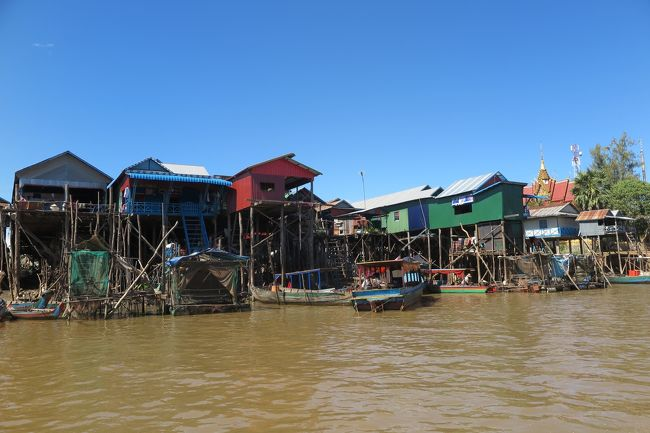

みんなの知らないカンボジア
はじめにGreeting
あいさつと自己紹介
僕の名前は神田陽翔です。
僕はカンボジアに5年間住んでいました。そしてカンボジアに住んでいた頃から水の問題に興味を持っていました。小学校卒業前の最後の探究プロジェクトのExhibitionというもので、SDGS6と14をテーマに海の汚染やプラスチック、マイクロプラスチックなどの問題についてまとめ、保護者や多くの人に発表しました。今回新クラスでの「エクスプロア」に取り組むにあたり、僕はまず、当時学んだSDGSや水に関する知識を使おうと考えていました。しかし、先生や保護者に相談していく中で、「なぜそもそも僕は、水の問題に興味を持ったのか。」そんな問いが自分の中で生まれました。答えを出すために振り返ってみると、その理由は、カンボジアの川や海が茶色く汚れているということを日常的に目にしていたからだと思いました。ですが、その一方で今思うと、カンボジアの水道水は驚くほど綺麗でした。透明で、しっかり飲むことができてしまうほどです。そこで、僕の中にもう一つの問いができました。「発展途上国であるはずのカンボジアでなぜ水道水が綺麗で実際に飲むことができるのか。」このエクスプロアはこの疑問から始まり、このウェブサイトではカンボジアの水やエクソンチャンと言う人物を紹介しながら、「知っているつもり」と「本当に理解すること」の違いについて考えていきます。